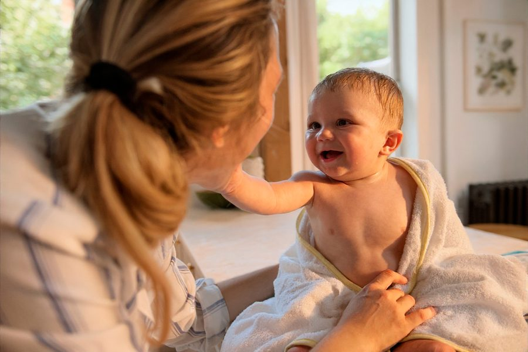
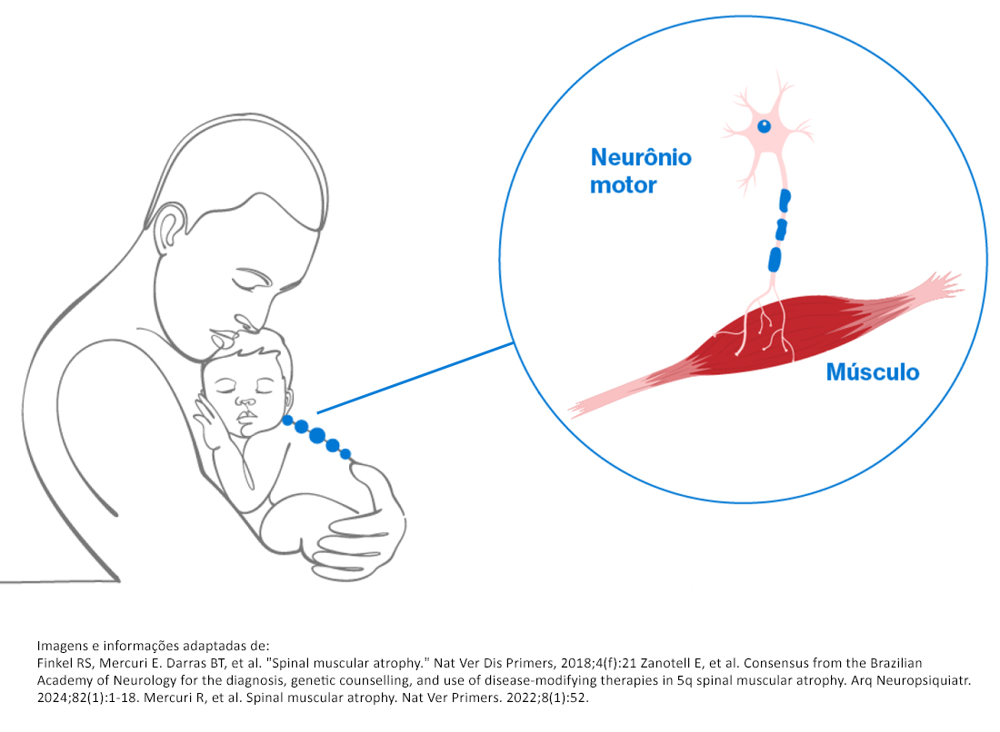
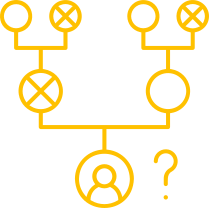
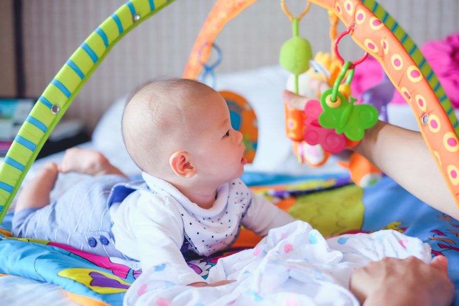
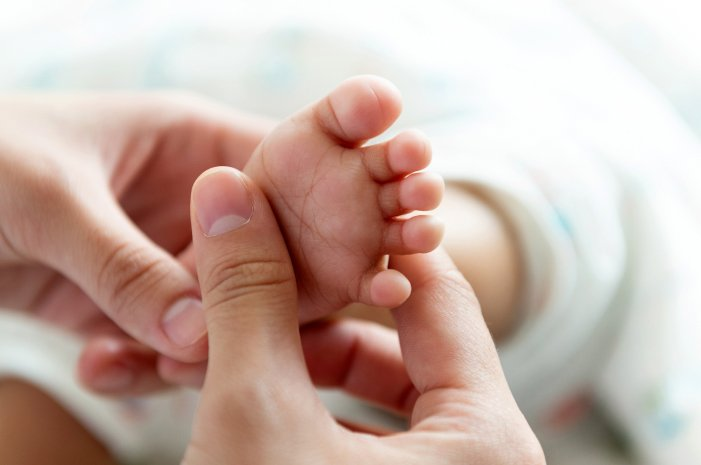
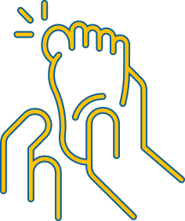

CID G12
Atrofia muscular espinhal - AME
Entenda a AME, seus sinais, diagnóstico e cuidados.
O que é Atrofia muscular espinhal?
A Atrofia Muscular Espinhal, também conhecida como AME, é uma doença genética rara e progressiva que afeta a parte do sistema nervoso responsável pelo controle dos movimentos musculares voluntários.1-4
A doença é caracterizada pela degeneração dos neurônios motores localizados na medula espinhal. Esses neurônios controlam os movimentos dos músculos e, quando são comprometidos, ocorre fraqueza muscular progressiva e perda de massa muscular.1,3-6
A AME é causada por uma alteração no gene SMN1, que compromete a produção de uma proteína essencial para a sobrevivência e o funcionamento dos neurônios motores.1,4-6


A AME é hereditária?
A AME é uma doença hereditária. Isso significa que a alteração genética pode estar presente nos pais ou em outros antepassados, como portadores, mesmo que eles não apresentem sintomas ou histórico familiar conhecido da doença.2
A condição não afeta a sensibilidade, mas pode comprometer atividades motoras como sustentar a cabeça, sentar-se, engatinhar, ficar em pé e andar.4,7
O diagnóstico precoce e o acompanhamento médico são importantes para melhorar a qualidade de vida da criança e de sua família.8
Quais são os sinais e sintomas da AME?
Atividades essenciais, como respirar, engolir e se locomover, dependem do funcionamento coordenado dos neurônios motores. Na AME, a degeneração e a perda dessas células provocam fraqueza muscular progressiva e, nos casos mais graves, podem levar à insuficiência respiratória.9
Os bebês podem apresentar hipotonia, conhecida como diminuição do tônus muscular, e fraqueza que geralmente afeta mais as pernas do que os braços. A fraqueza dos músculos localizados entre as costelas também pode alterar o padrão respiratório e resultar no chamado tórax em “formato de sino”.3
Outros sinais que podem aparecer incluem:3,9-11
Dificuldade para sustentar a cabeça
Perda de habilidades motoras já adquiridas
Dificuldade para sentar-se, ficar em pé ou andar
Engasgos frequentes e dificuldade para engolir
Movimentos fracos
Choro e tosse fracos
Dificuldade para mastigar
Fraqueza nos membros inferiores
Dificuldades respiratórias
Quais são os tipos de AME?
A AME é classificada em cinco tipos — 0, I, II, III e IV — de acordo com a idade em que os sintomas aparecem, as habilidades motoras alcançadas e a gravidade da doença. Os tipos 0 e I são considerados os mais graves.10,11
Os sinais podem ser percebidos ainda durante a gestação, com a diminuição dos movimentos do bebê. Ao nascer, a criança costuma apresentar fraqueza muscular e insuficiência respiratória.10,11
É o tipo mais comum e grave. Os sinais começam antes dos seis meses de idade. O bebê pode apresentar movimentos fracos, dificuldade para sustentar o pescoço e incapacidade de sentar-se sem apoio.
Também podem ocorrer engasgos, dificuldade para engolir, choro e tosse fracos e necessidade de auxílio para respirar quando o tratamento não é iniciado precocemente.10,11
Os sintomas aparecem entre os seis e os 18 meses. A criança consegue sentar-se sem apoio e algumas conseguem ficar em pé, mas não desenvolvem a capacidade de caminhar de forma independente.
A fraqueza dos músculos responsáveis pela mastigação pode dificultar a alimentação. Também podem ocorrer insuficiência respiratória, escoliose, deslocamento do quadril e deformidades articulares.10,11
Os sintomas costumam aparecer após os 18 meses. A pessoa geralmente consegue ficar em pé e andar, mas pode perder essas habilidades com a progressão da doença. As pernas costumam ser mais afetadas do que os braços.10,11
Os sintomas começam na vida adulta. Esse tipo apresenta um curso mais leve, com fraqueza predominante nos membros inferiores e dificuldade para andar.10,11
O que são marcos motores do desenvolvimento
Os marcos motores são posturas e movimentos que a maioria das crianças consegue realizar em determinadas idades. A maneira como a criança age e se movimenta oferece informações importantes sobre seu desenvolvimento.12,13
Entre os primeiros marcos estão:12,13
- controlar a cabeça;
- rolar;
- arrastar-se;
- sentar-se;
- engatinhar;
- ficar em pé;
- andar.
Os intervalos de idade representam variações consideradas normais entre crianças saudáveis. Quando uma criança apresenta atraso, estagnação ou perda de uma habilidade já adquirida, deve-se procurar orientação médica.12,15
Marcos motores e sinais de alerta por idade:
Entre 2 e 3 meses
A criança começa a manter a cabeça elevada e a erguer o tronco quando está de bruços.
Converse com o pediatra se o bebê não conseguir sustentar a cabeça ou elevar o tronco nessa posição.12-15

Entre 4 e 5 meses
A criança mantém a cabeça erguida sem apoio, começa a rolar, segura brinquedos, leva as mãos e objetos à boca e se senta com apoio.
É importante procurar orientação se ela não sustentar a cabeça, não tentar alcançar objetos, não levar objetos à boca ou não conseguir sentar-se com apoio.12-15
Entre 6 e 7 meses
A criança começa a rolar para os dois lados, sentar-se sem apoio e sustentar parte do peso sobre as pernas.
Alguns sinais de alerta são não rolar, não se sentar, parecer muito rígida ou muito "molinha" e apresentar dificuldade para pegar ou levar objetos à boca.12-15
Entre 8 e 9 meses
A criança consegue sentar-se sozinha, brincar sentada, ficar em pé com apoio, puxar-se para levantar e começar a engatinhar.
Converse com o pediatra se ela não sustentar o peso sobre as pernas ou não conseguir sentar-se nem mesmo com ajuda.12-15
Entre 10 e 12 meses
A criança se senta sem ajuda, segura-se para levantar, caminha apoiada nos móveis e pode começar a dar alguns passos.
É importante buscar orientação se ela não engatinhar, não conseguir ficar em pé com apoio ou perder alguma habilidade que já possuía.12-15
Entre 13 e 18 meses
A criança começa a andar sozinha e pode conseguir subir degraus, correr, puxar brinquedos e utilizar colher e copo.
Converse com o pediatra se ela não conseguir andar ou perder uma habilidade adquirida.12-15
Aos 2 anos
A criança começa a correr, chutar e arremessar bolas, subir e descer móveis e utilizar escadas com apoio.
Tropeços e quedas frequentes, dificuldade para andar com firmeza ou perda de habilidades devem ser comunicados ao pediatra.12-15
Quando é necessário investigar?
Quando os pais percebem que a criança parou de desenvolver novas habilidades ou perdeu capacidades que já havia adquirido, é importante conversar com o pediatra.13
Também é necessário ficar atento se a criança:13
- parece muito "molinha";
- não consegue se movimentar ou sustentar a cabeça;
- apresenta braços e pernas muito rígidos;
- não consegue pegar brinquedos após o sexto mês;
- não interage com as pessoas ou com o ambiente.
Os primeiros mil dias — que incluem os 270 dias da gestação e os 730 dias até a criança completar dois anos — são um período importante para o desenvolvimento físico e mental.13
Por que o diagnóstico da AME é urgente?
Os sintomas da AME podem variar em relação à idade de início e à gravidade, além de serem semelhantes aos de outras doenças. Por isso, atrasos no diagnóstico podem acontecer.16
A idade de início da doença corresponde ao momento em que o primeiro sintoma é observado pelos pais, cuidadores ou profissionais de saúde. A idade do diagnóstico corresponde ao momento em que a AME é confirmada por meio de um teste genético.16
Alguns pacientes passam por diferentes profissionais de saúde e exames destinados a descartar outras doenças antes da realização do teste genético. Essa jornada pode gerar desgaste físico e emocional para o paciente e seus cuidadores.16
A AME de início infantil é considerada a causa genética mais comum de mortalidade infantil.18
O diagnóstico tardio pode representar uma oportunidade perdida para iniciar precocemente uma intervenção. Quando o tratamento é realizado antes de uma perda motora significativa, os resultados podem ser melhores.16-19

O que é o teste do pezinho ampliado?
O teste do pezinho ampliado é uma versão mais abrangente do exame tradicional. Ele é feito com algumas gotas de sangue retiradas do calcanhar do recém-nascido, geralmente entre o terceiro e o quinto dia de vida.20-24
O exame ampliado pode rastrear mais de 50 condições genéticas, metabólicas, imunológicas e raras, incluindo a Atrofia Muscular Espinhal.20-25
O diagnóstico precoce das condições incluídas na triagem neonatal ajuda a garantir que a criança receba rapidamente o tratamento adequado. Quanto mais cedo forem iniciadas as terapias modificadoras da doença, melhor poderá ser o prognóstico.20,25
Um resultado alterado não significa necessariamente que a criança tenha a doença. Exames confirmatórios são necessários, pois os testes de triagem neonatal podem apresentar resultados falso-positivos.28,29
Converse com o pediatra e informe-se sobre a cobertura do teste ampliado em seu estado ou sobre a possibilidade de realizar o exame de forma particular.20,26,27
A triagem neonatal pode identificar precocemente doenças metabólicas, genéticas, enzimáticas e endocrinológicas.
Isso permite que o acompanhamento e o tratamento sejam iniciados o mais cedo possível, reduzindo possíveis impactos para a saúde da criança.24,30-32
O Programa Nacional de Triagem Neonatal foi criado em 2001. Em 2021, a Lei nº 14.154 ampliou o número de grupos de doenças incluídos no teste, contemplando também a Atrofia Muscular Espinhal.21,24,26,34
Caso o exame não seja realizado antes da saída da maternidade, os pais podem buscar um dos postos disponíveis no município.30

O diagnóstico foi confirmado. E agora?
Após o diagnóstico de AME:
Procure entender a doença e converse com médicos especialistas, como neuropediatra, neurologista ou geneticista.
Compartilhe o diagnóstico, busque acolhimento emocional e procure associações de pacientes, organizações e grupos especializados em AME.
Agende consultas regulares e siga a orientação para acompanhamento multidisciplinar e elaboração de um plano individualizado de cuidados.
Reúna os documentos necessários para solicitar o tratamento pelo SUS ou plano de saúde e siga as orientações da equipe responsável.
O geneticista pode ajudar a explicar as causas hereditárias da AME, o risco para outros membros da família e questões relacionadas ao planejamento familiar.
Podem ser necessárias adaptações em casa, no transporte e nas atividades diárias. Mantenha o diálogo com os profissionais de saúde para ajustar os cuidados.
Permita-se sentir e compartilhar emoções. O apoio psicológico pode ser importante para toda a família.
Comunique à equipe médica qualquer alteração, perda de habilidade ou novo sintoma.
O cuidado deve ser multidisciplinar
O acompanhamento da pessoa com AME deve considerar diferentes necessidades e envolver profissionais de diversas áreas. Cada aspecto não deve ser tratado isoladamente, mas como parte de uma abordagem multidisciplinar.3
O acompanhamento deve ser definido de forma individualizada, de acordo com as necessidades do paciente e as orientações da equipe de saúde.3
Acesso ao tratamento pelo SUS
O Brasil possui uma Política Nacional de Atenção Integral às Pessoas com Doenças Raras. Como a AME é uma doença rara, o SUS estabelece diretrizes para o cuidado integral do paciente.35
Para buscar acesso pelo SUS:
- informe-se sobre os tratamentos incorporados e os critérios de elegibilidade;35,38
- trabalhe em parceria com o médico para documentar a necessidade do tratamento;38
- reúna exames, laudos e relatórios;38
- acompanhe o processo junto à rede habilitada pelo Ministério da Saúde;41
- busque orientação em associações de pacientes.39
Acesso ao tratamento pelo plano de saúde
Nos planos privados, a Agência Nacional de Saúde Suplementar regulamenta a cobertura de tratamentos para doenças raras.36,37,40
O artigo orienta:
- verificar, com o médico, os tratamentos incorporados pela ANS e os critérios de elegibilidade;36,40
- reunir exames genéticos, laudos, relatórios de evolução e prescrições detalhadas;36,40
- protocolar formalmente a solicitação e guardar comprovantes e números de protocolo;36,40
- acompanhar os prazos de resposta;
- acompanhar ativamente o processo.
O artigo informa prazo de até 21 dias úteis para resposta relacionada a medicamentos.36
Onde buscar apoio?
Organizações de pacientes podem ajudar no acolhimento emocional, na troca de experiências, no acesso a informações sobre a doença e na orientação sobre diferentes serviços.42-48
- AAME: Amigos da Atrofia da Medula Espinhal — Rio de Janeiro;42
- ABRAME: Associação Brasileira de Atrofia Muscular Espinhal — Ceará;43
- DONEM: Associação dos Familiares e Amigos dos Portadores de Doenças Neuromusculares — Pernambuco;44
- Instituto Viva Íris: Espaço Viva Íris Terapias Neuromotoras — Minas Gerais;45
- INAME: Instituto Nacional da Atrofia Muscular Espinhal;46
- Instituto Fernando AME: Instituto Fernando Loper Vasconcellos — Paraná;47
- SBGM: Sociedade Brasileira de Genética Médica e Genômica.48
Referências
1. Zanoteli E et al. Consensus from the Brazilian Academy of Neurology for the diagnosis, genetic counseling, and use of disease-modifying therapies in 5q spinal muscular atrophy. Arquivos de Neuro-Psiquiatria. 2024;82(1):1–18.
2. Prior TW, Leach ME, Finanger E. Spinal Muscular Atrophy. In: GeneReviews®. University of Washington, Seattle; atualizado em 2024.
3. Mercuri E, Finkel RS, Muntoni F et al. Diagnosis and management of spinal muscular atrophy: Part 1: Recommendations for diagnosis, rehabilitation, orthopedic and nutritional care. Neuromuscular Disorders. 2018;28(2):103–115.
4. Mercuri E et al. Spinal muscular atrophy. Nature Reviews Disease Primers. 2022;8(1):52.
5. Lefebvre S, Bürglen L, Reboullet S et al. Identification and characterization of a spinal muscular atrophy-determining gene. Cell. 1995;80(1):155–165.
6. Cure SMA. Genética da AME. Folheto da coleção Tratamento; 2022.
7. von Gontard A, Zerres K, Backes M et al. Intelligence and cognitive function in children and adolescents with spinal muscular atrophy. Neuromuscular Disorders. 2002;12(2):130–136.
8. Glascock J, Sampson J, Haidet-Phillips A et al. Treatment algorithm for infants diagnosed with spinal muscular atrophy through newborn screening. Journal of Neuromuscular Diseases. 2018;5(2):145–158.
9. National Library of Medicine. Disease mechanisms and therapeutic approaches in spinal muscular atrophy. Acesso em setembro de 2024.
10. Instituto Nacional da Atrofia Muscular Espinhal. Conheça quais são os tipos de AME e seus sintomas. Acesso em setembro de 2024.
11. National Library of Medicine. Spinal muscular atrophy. Acesso em setembro de 2024.
12. Sociedade Brasileira de Neurologia Infantil. Aprenda os sinais. Aja cedo. Acesso em abril de 2024.
13. Fiocruz. A importância do desenvolvimento motor na primeira infância. Acesso em abril de 2024.
14. Sanar Medicina. Marcos do desenvolvimento neuropsicomotor na infância. Acesso em abril de 2024.
15. MSD Manuals. Desenvolvimento infantil. Acesso em abril de 2024.
16. National Library of Medicine. Delay in Diagnosis of Spinal Muscular Atrophy: A Systematic Literature Review. Acesso em agosto de 2024.
17. National Library of Medicine. Spinal Muscular Atrophy: The Past, Present, and Future of Diagnosis and Treatment. Acesso em agosto de 2024.
18. National Library of Medicine. Natural history of infantile-onset spinal muscular atrophy. Acesso em agosto de 2024.
19. National Library of Medicine. Spinal Muscular Atrophy: An Evolving Scenario through New Perspectives in Diagnosis and Advances in Therapies. Acesso em agosto de 2024.
20. de Souza CFM et al. Newborn screening in Brazil: realities and challenges. Journal of Community Genetics. 2025;16(4):431–438.
21. Ministério da Saúde. Teste do Pezinho será ampliado e detectará até 50 novas doenças. 2021.
22. Dias LR et al. The newborn screening tests in Brazil: regional and socioeconomic prevalence and inequalities in 2013 and 2019. Jornal de Pediatria. 2023;99(4):356–363.
23. Guida G. Teste do pezinho ampliado: quais doenças detecta e importância do exame. Laboratório Sérgio Franco; 2023.
24. Universidade Federal de São Paulo. Teste do pezinho: entenda como é feito e quais doenças podem ser detectadas com o exame. Acesso em junho de 2024.
25. Becker MM et al. Why should a 5q spinal muscular atrophy neonatal screening program be started? Arquivos de Neuro-Psiquiatria. 2024;82(10):1–9.
26. Governo Federal. Ampliada a triagem de doenças diagnosticadas em “teste do pezinho”. Acesso em junho de 2024.
27. Ministério da Saúde. Cuidado neonatal. 2025.
28. Brasil. Ministério da Saúde. Triagem Neonatal Biológica: manual técnico. Brasília; 2016.
29. Brasil. Ministério da Saúde. Manual de normas técnicas e rotinas operacionais do Programa Nacional de Triagem Neonatal. Brasília; 2002.
30. Biblioteca Virtual em Saúde do Ministério da Saúde. Teste do Pezinho. Acesso em junho de 2024.
31. Sociedade Brasileira de Pediatria. Ampliação do teste do pezinho pode mudar a história natural de uma doença rara. Acesso em junho de 2024.
32. Revistas USP. Análise da compreensão de pais acerca do teste do pezinho. Acesso em junho de 2024.
33. Instituto Nacional da Atrofia Muscular Espinhal. O que é atrofia muscular espinhal. Acesso em junho de 2024.
34. Câmara dos Deputados. Comissão aprova proposta que obriga hospitais a orientarem pais sobre o teste do pezinho. Acesso em junho de 2024.
35. Félix TM, de Oliveira BM, Horovitz DDG. Building a National Policy for Rare Disease in Brazil. Journal of Community Genetics. 2024;16(4):389–396.
36. Brasil. Agência Nacional de Saúde Suplementar. Resolução Normativa nº 428, de 7 de novembro de 2017.
37. Cunico C, Gomes RZ, Schiavon JLN, Pereira LRL. Initiatives to promote access to medicines after publication of the National Policy for Comprehensive Care for People with Rare Diseases in Brazil. Orphanet Journal of Rare Diseases. 2023;18(1):290.
38. Brasil. Ministério da Saúde. Protocolo Clínico e Diretrizes Terapêuticas da Atrofia Muscular Espinhal 5q tipos 1 e 2. Portaria Conjunta SAES/SECTICS nº 3, de 21 de março de 2025.
39. Cure SMA. About Cure SMA. 2024.
40. Agência Nacional de Saúde Suplementar. Resolução Normativa nº 571, de 8 de fevereiro de 2023.
41. Ministério da Saúde. Nota Informativa nº 9/2025 — CGRAR/DAET/SAES/MS. Acesso em outubro de 2025.
42. AAME. Amigos da Atrofia da Medula Espinhal. Acesso em maio de 2024.
43. ABRAME. Associação Brasileira de Atrofia Muscular Espinhal. Acesso em maio de 2024.
44. DONEM. Associação dos Familiares e Amigos dos Portadores de Doenças Neuromusculares. Acesso em maio de 2024.
45. Instituto Viva Íris. Espaço Viva Íris Terapias Neuromotoras. Acesso em maio de 2024.
46. INAME. Instituto Nacional da Atrofia Muscular Espinhal. Acesso em maio de 2024.
47. Instituto Fernando Loper Vasconcellos. Acesso em maio de 2024.
48. Sociedade Brasileira de Genética Médica e Genômica. Serviços de referência em doenças. Acesso em maio de 2024.
Material destinado ao público leigo. 2026 © Direitos Reservados Novartis Biociências S/A – Proibida a reprodução total ou parcial não autorizada. Atualizado em 13 de agosto de 2026.
BR-XXXXX